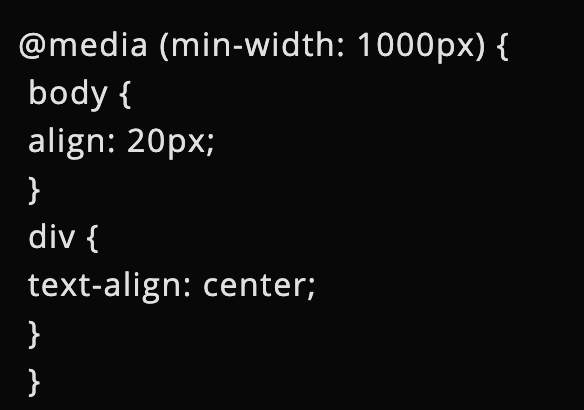

El núcleo de cualquier diseño web responsive son los media queries. Muchas personas nuevas al diseño web responsive no pasan la cantidad de tiempo suficiente para familiarizarse con este término. Por eso, a continuación hablaremos acerca de qué son las media queries y de su relación con un diseño responsive. Las media queries permiten a las páginas web utilizar diferentes declaraciones de estilo de la hoja de estilos en base al ancho de la pantalla del dispositivo en el que se visualiza el sitio web. En los diseños web responsive, una media query es una declaración CSS que se utiliza como parámetro para saber cuándo utilizar otra declaración de estilo en base a las dimensiones del dispositivo en donde se visualiza la página web. Hay dos maneras de utilizar una media query: utilizando una hoja de estilos externa o escribiendo directamente en la hoja de estilos.
Externo
"link rel="stylesheet"; media="screen and (min-width:320px) and (max-width:480px)"; href="css/mobile.css"
Directo
"@media screen and (min-width:320px) and (max-width:480px)"
Estos son ejemplos de dos formas distintas de realizar declaraciones CSS que solo pueden utilizarse cuando el dispositivo se encuentra entre 320px y 480px. Una buena idea de uso para cada una de estos parámetros de declaración es utilizando estilos para móviles que puedan salirse de este rango.
@ Media Screen
Se utiliza para separar qué estilos se utilizan para diferentes tipos de media, en este caso el screen. Por definición, el valor screen está planeado para ser utilizado primordialmente de pantallas de computadora a color y es el valor por defecto para CSS.
Lo más común es que usemos las Media Queries para detectar las dimensiones de la pantalla.

Orientación:
Definir estilos en función de la orientación, lo que resulta especialmente adecuado para el diseño para móviles.